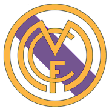

crests and colors
Crests
1902 1908 1920  1931 1941 2001
The first crest had a simple design consisting of a decorative interlacing of the three initials of the club, "MCF" for Madrid Club de Fútbol, in dark blue on a white shirt. The first change in the crest occurred in 1908 when the letters adopted a more streamlined form and appeared inside a circle.[183] The next change in the configuration of the crest did not occur until the presidency of Pedro Parages in 1920. At that time, King Alfonso XIII granted the club his royal patronage which came in the form of the title "Real Madrid," meaning "Royal."[184] Thus, Alfonso's crown was added to the crest and the club styled itself Real Madrid Club de Fútbol.
With the dissolution of the monarchy in 1931, all royal symbols (the crown on the crest and the title of Real) were eliminated. The crown was replaced by the dark mulberry band of the Region of Castile.[49] In 1941, two years after Nationalist victory in the Civil War, the Francoist regime restored the crest's "Real Corona", or "Royal Crown", while the mulberry stripe of Castile was retained as well.[185][57] In addition, the whole crest was made full color, with gold being the most prominent, and the club went back to its honorific name Real Madrid Club de Fútbol.[183] The most recent modification to the crest occurred in 2001 when the club wanted to better situate itself for the 21st century and further standardize its crest. One of the modifications made was changing the mulberry stripe to a more bluish shade.
colours
Real Madrid has maintained the white shirt for its home kit throughout the history of the club. There was, however, one season that the shirt and shorts were not both white. It was an initiative undertaken by Juan Padrós in honour of an English team Corinthian, which he had met on one of his trips, one of the most famous teams at the time known for its elegance and sportsmanship.[44] It was decided that Real Madrid would wear black shorts in an attempt to replicate the English team, which had also inspired Madrid's original white kit, but the initiative lasted just one year. After being eliminated from the cup by Barcelona with a 1–5 defeat in Madrid and a 2–0 defeat in Catalonia, President Parages decided to return to an all-white kit, claiming that the other kit brought bad luck.[note 3] By the early 1940s, the manager changed the kit again by adding buttons to the shirt and the club's crest on the left breast, which has remained ever since. On 23 November 1947, in a game against Atlético Madrid at the Metropolitano Stadium, Real Madrid became the first Spanish team to wear numbered shirts.[57] English club Leeds United permanently switched their blue shirt for a white one in the 1960s, to emulate the dominant Real Madrid of the era.
Real's traditional away colours are all blue or all purple. Since the advent of the replica kit market, the club has also released various other one colour designs, including red, green, orange and black. The club's kit is manufactured by Adidas, whose contract extends from 1998.[187][188] Real Madrid's first shirt sponsor, Zanussi, agreed for the 1982–83, 1983–84 and 1984–85 seasons. Following that, the club was sponsored by Parmalat and Otaysa before a long-term deal was signed with Teka in 1992.[189][190] In 2001, Real Madrid ended their contract with Teka and for one season and used the Realmadrid.com logo to promote the club's website. Then, in 2002, a deal was signed with Siemens and in 2006, the BenQ Siemens logo appeared on the club's shirt.[191] Real Madrid's shirt sponsor from 2007 until 2013 was bwin.com following the economic problems of BenQ Siemens.[192][193] Fly Emirates became their shirt sponsor in 2013, and in 2017 the club renewed the sponsorship with the airliner, signing a deal until 2022 worth €70 million per year.[194] In 2022, the agreement was again extended, until 2026.[195] In 2015, Madrid signed a new ten-year contract with Adidas, believed to be worth a total of £850 million (€1 billion), with the club earning £59 million (€64 million) per season. The contract includes a clause sanctioning penalty or agreement termination anytime, if Real Madrid fails to qualify for the European competitions or is relegated from La Liga.